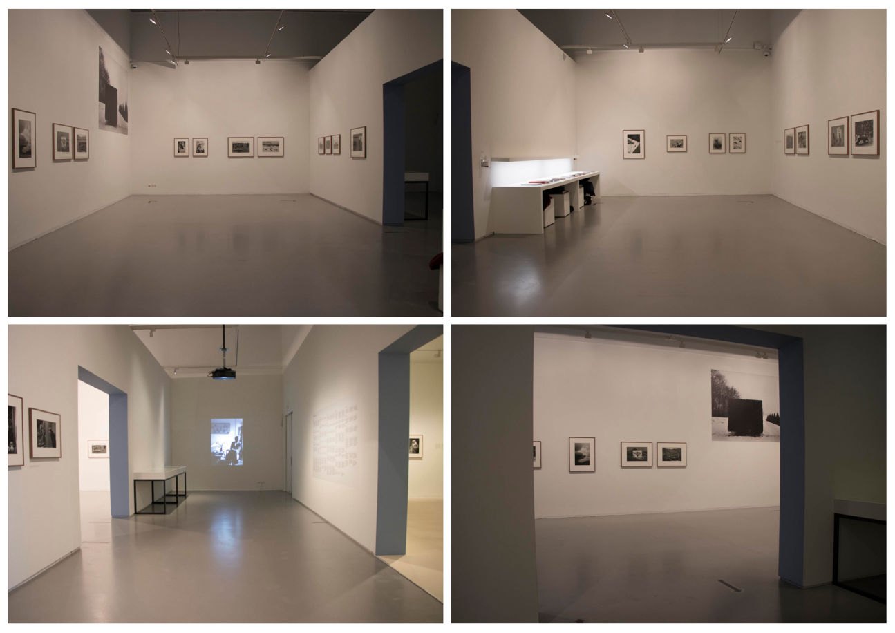

26 november 2020

space for the installation
This is a timeline block. Click on the blue gear icon to set the number of items in this timeline. You don't have to code to create your own site. Select one of available themes in the Mobirise sitebuilder.
6 december 2020

Working on the installation space
This is a timeline block. Click on the blue gear icon to set the number of items in this timeline. You don't have to code to create your own site. Select one of available themes in the Mobirise sitebuilder.